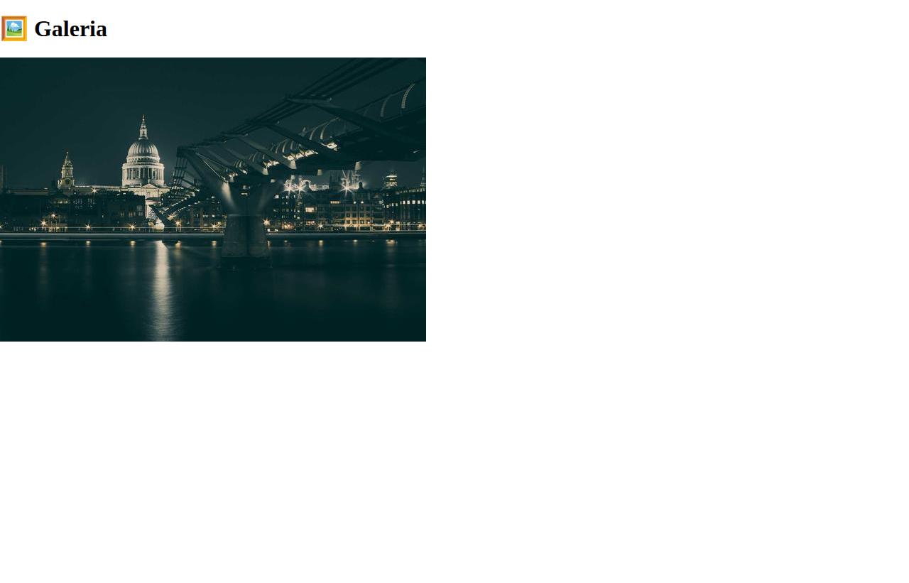

Imagens e fontes: next/image e next/font
A Ana trocou todos os <img> do site por <Image> e as páginas pararam de "pular" ao carregar — porque a imagem já reserva o espaço. E trocou o <link> do Google Fonts por next/font e a fonte passou a vir do próprio servidor, sem bloquear a pintura. Nesta aula você aprende os dois.
next/image: WebP/AVIF automático, lazy loading,sizes,priority(LCP) efill- Por que
width/height(oufill) evitam o CLS (layout shift) - Imagens externas:
images.remotePatternsnonext.config.js next/font/googleenext/font/local: fonte self-hosted no build, comvariablepro CSS- Trocar
<img>por<Image>passo a passo
A ideia: a padaria e a letra de mão
Uma imagem com <img> comum é como um pão embrulhado em jornal: o navegador não sabe o tamanho do pacote, então não reserva lugar na mesa — quando o pão chega, empurra todo o resto da refeição (é o layout shift, o famoso CLS ruim). O <Image> é o pão embalado com etiqueta de tamanho: o navegador reserva a fatia exata na mesa (width/height), e quando a imagem chega já cabe certinho, sem empurrar nada. Além disso, o Next.js reenvia a imagem no formato certo (WebP/AVIF, menor), no tamanho certo da tela (sizes) e só quando ela está perto de aparecer (lazy) — ou na hora, se for a imagem principal (priority).
A fonte é a mesma história com outra metáfora: buscar a fonte no Google Fonts durante o carregamento é como escrever o cardápio à mão na hora do pedido — o texto aparece com a letra padrão feia até a "letra bonita" chegar (FOUT). O next/font baixa a fonte no momento do build, guarda no seu próprio servidor e entrega com @font-face local: zero requisição externa, zero pulo de letra, e ainda ganha preload automático. A Ana trocou a fonte e o Lighthouse parou de reclamar.
Ana escolhe a fonte da placa e o tamanho certo da foto na vitrine
Na loja nova da Ana, a placa tem que ser legível de longe — então ela escolhe uma letra grande e própria, não a letra de mão do rascunho. O next/font faz isso no site: a fonte vira um arquivo otimizado, servido do próprio servidor, sem o navegador ir buscar no Google e sem a letra "pular" quando carrega (zero layout shift). Já o next/image é a foto da vitrine: ele ajusta o tamanho certo, converte para um formato leve (WebP/AVIF) e só carrega a imagem quando ela vai aparecer na tela.
Juntas, as duas ferramentas são o kit de vitrine da Ana: a placa (fonte) sempre no lugar certo e a foto (imagem) leve e nítida. E o melhor: como o trabalho é feito no build/servidor, o navegador recebe tudo mastigado — a página abre rápido e o Google entende o conteúdo.
next/image na prática
import Image from 'next/image';
export default function Galeria() {
return (
<main>
{/* 1) Imagem principal (acima da dobra): priority => carrega já, vira o LCP */}
<Image
src="/foto-hero.jpg"
alt="Foto da Ana no ateliê"
width={1200}
height={600}
priority
/>
{/* 2) Imagem que ocupa o container inteiro: fill + sizes */}
<div style={{ position: 'relative', width: '100%', height: 300 }}>
<Image
src="/banner.jpg"
alt="Banner da loja"
fill
sizes="(max-width: 768px) 100vw, 1200px"
style={{ objectFit: 'cover' }}
/>
</div>
{/* 3) Imagem externa (precisa liberar o domínio no next.config) */}
<Image
src="https://picsum.photos/600/400"
alt="Foto aleatória"
width={600}
height={400}
/>
</main>
);
}
/** @type {import('next').NextConfig} */
const nextConfig = {
images: {
remotePatterns: [
{ protocol: 'https', hostname: 'picsum.photos' },
// ou solto: { hostname: '**.exemplo.com' }
],
},
};
module.exports = nextConfig;
next/font na prática
import { Inter, Roboto_Mono } from 'next/font/google';
const inter = Inter({
subsets: ['latin'],
variable: '--font-inter', // vira uma variável CSS
display: 'swap',
});
const mono = Roboto_Mono({ subsets: ['latin'], variable: '--font-mono' });
export default function RootLayout({ children }) {
return (
<html lang="pt-BR" className={`${inter.variable} ${mono.variable}`}>
<body>{children}</body>
</html>
);
}
body {
font-family: var(--font-inter), system-ui, sans-serif;
}
code {
font-family: var(--font-mono), monospace;
}
Tabela rápida: img x Image
<img> comum | <Image> do Next | |
|---|---|---|
| Tamanho na tela | Carrega o arquivo original | Redimensiona e entrega no tamanho certo (sizes) |
| Formato | JPG/PNG original | WebP/AVIF automático (menor) |
| Lazy loading | loading="lazy" manual | Automático (exceto priority) |
| Layout shift (CLS) | Empurra o conteúdo se não tiver width/height | Reserva espaço sozinho (width/height ou fill) |
| Otimização de rota | — | /_next/image?url=...&w=...&q=75 |
Missão: abaixo há um <img> comum (sem reserva de espaço — causa CLS). Troque por <Image> (já definido no topo como um <img> turbinado) com width, height, alt descritivo e sizes. Rode para ver a imagem renderizando igual, mas "com etiqueta de tamanho". Depois clique em Verificar missão.
// no Next.js de verdade: import Image from 'next/image';
// aqui simulamos: o Image só repassa as props pro <img>
function Image(p) { return <img {...p} style={{ maxWidth: '100%', height: 'auto' }} />; }
function App() {
return (
<div>
<h1>🖼️ Galeria</h1>
{/* TODO: troque o <img> abaixo por:
<Image src="https://picsum.photos/600/400" width={600} height={400}
alt="Foto aleatória de paisagem" sizes="(max-width: 600px) 100vw, 600px" /> */}
<img src="https://picsum.photos/600/400" alt="" />
</div>
);
}function Image(p) { return <img {...p} style={{ maxWidth: '100%', height: 'auto' }} />; }
function App() {
return (
<div>
<h1>🖼️ Galeria</h1>
<Image src="https://picsum.photos/600/400" width={600} height={400}
alt="Foto aleatória de paisagem" sizes="(max-width: 600px) 100vw, 600px" />
</div>
);
}
Quando dá errado
<Image> com src externo sem liberar o domínio. O otimizador recusa na hora:Error: Invalid src prop (https://picsum.photos/600/400) on `next/image`, hostname
"picsum.photos" is not configured under images in your next.config.js
→ adicione images.remotePatterns = [{ protocol: 'https', hostname: 'picsum.photos' }]
<Image> sem width/height nem fill:Error: Image with src "/foto.jpg" is missing required "width" property. → passe width e height (proporção original) OU use fill dentro de um container com position: relative e altura definida.
next/font/google baixa a fonte durante o next build — sem internet no servidor de build, o build falha. Solução: next/font/local com o arquivo .woff2 na pasta public/fonts.Exercícios
Por que o <Image> não causa layout shift (CLS)?
A imagem principal, acima da dobra (a que conta para o LCP), deve usar:
Para usar <Image src="https://picsum.photos/...">, o que precisa no next.config.js?
Complete: para a imagem preencher o container, usa-se a prop fill e o container precisa de position: relative. Complete a prop que diz os tamanhos possíveis:
Complete a importação da fonte do Google no layout: